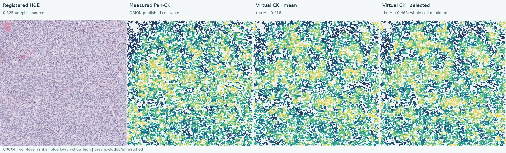
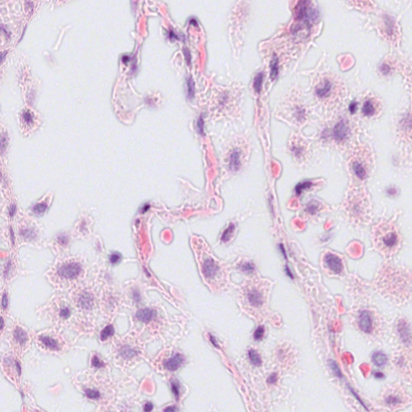
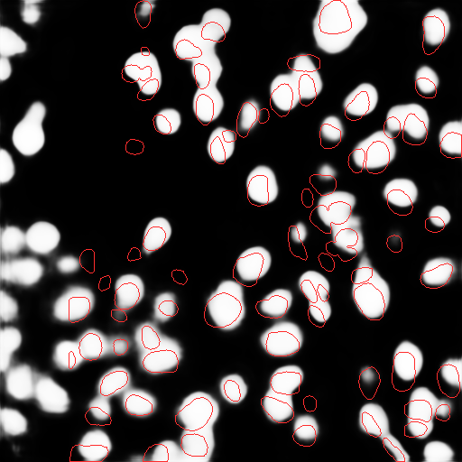

Corrected cell-type benchmark
The corrected run uses 120 MoNuSAC images: 88 organizer-training and 32 patient-separated test images across breast, kidney, lung and prostate. All were verified against scanner RGB. The saved 23-channel GigaTIME outputs use a 0.25 µm/pixel model grid. Rechecking virtual DAPI against actual H&E-derived StarDist nuclei, with unchanged thresholds, gives 33 fit, 4 development and 10 test images that pass every nuclear and shadow gate.
Conditional accuracy is not four-class validation. The corrected fastPLS 0.4 model predicts all 5,916 StarDist-detected nuclei in the ten QC-passing organizer-test images. Among 3,975 conservatively matched to expert types, accuracy is 94.26%; both matched macrophages were missed and no matched neutrophils occur in this test subset. Four-class balanced accuracy and correctness of unmatched detections cannot be established. The organizer test was used during retrospective pipeline audit, so this is development evaluation. The earlier 96.01% score at source polygons is archival.
| Analysis | Images | Cell-type score | Interpretation |
|---|---|---|---|
| Corrected StarDist-detected nuclei | 33 fit / 4 development / 10 organizer test | 94.26% on 3,975 matched test nuclei | 5,916 test detections typed; both matched macrophages missed; no matched neutrophils |
| Prior source-region conditional test | 38 training / 10 test passed original QC | 96.01% accuracy; balanced accuracy undefined | Historical, 0/3 test macrophages and no test neutrophils |
| All-image diagnostic | 88 training / 32 test | 96.65% accuracy; 48.36% balanced accuracy | Includes failed-QC images; not validated |
Open the detected-cell results on all 47 DAPI/shadow-QC-passing images → Compare scanner RGB H&E, expert annotation, StarDist nuclei, predicted cell types, matched errors and all 23 spatial GigaTIME channels. Each channel has a 47-image overview. The 120-image diagnostic gallery also retains QC failures and clearly labelled historical expert-region outputs. Its large purple regions in TCGA-2Z-A9JG-01Z-00-DX1_6 are source macrophage polygons, not StarDist detections.
Completed expansion, not a cell-type score: 93 smaller annotated images were prepared in scanner RGB and processed on CPU; only nine passed the frozen virtual-DAPI nuclear and shadow gates, while 84 failed. The nine contain two fit, three development and four test fields, with only eight matched fit macrophages and four fit neutrophils before marker-specific review. Their 23-channel outputs cannot be added wholesale to the classifier. Inspect all 93 corrected GigaTIME QC previews. Bundle completion and QC counts. The cohort comprises 59 training and 34 test images. Its source polygons add 201 neutrophils and 251 macrophages to training and 46 neutrophils and 163 macrophages to testing. These source-region counts do not reflect the nine QC-passing images; inspect all 93 prepared RGB inputs, the rare-class coverage audit and source geometry. Seventy of the 414 added macrophage regions exceed 5,000 pixels and require review for multiple nuclei. The current 32-image test set has only four annotated neutrophils, none in its ten passing images. CPU-only StarDist-to-expert matching on all 93 additional inputs finds 139 macrophages and 78 neutrophils in 44 fit images, 42 and 50 in 15 development images, and 122 and 24 in 34 test images; these are pre-GigaTIME, pre-QC candidates, not validated classification counts. Forty matched macrophage polygons exceed 5,000 pixels and remain flagged for review; ambiguous regions were withheld. See the patient-disjoint detected-cell preflight.
Read the detected-cell and QC audit, new score report, all 120 corrected-reference QC outcomes, and source-annotation geometry audit. The new detected-cell classifier uses all 23 GigaTIME channels in each of two compartments (46 features). TRITC and Cy5 are background controls. An image containing only one expert class does not test within-image multiclass discrimination.
H&E morphology development audit
We tested whether independent StarDist nuclear shape and scanner-RGB H&E optical density add useful information to all 23 GigaTIME channels. Ten label-free morphology features were appended to the saved 46 marker features for 10,049 matched cells from 33 QC-passing fit images. In a 21-patient leave-one-patient-out development comparison, four-class balanced accuracy rose from 0.412 to 0.437 with the original sampling and from 0.422 to 0.457 with capped-majority sampling. Equal-class sampling reached 0.458, compared with 0.408 for marker features alone.
This is a modest fit-cohort gain, not an independent test result or a deployed model change. Only 19 matched macrophages and 8 neutrophils occur in these fit images; even the best development variant recalled just 4/19 macrophages and 2/8 neutrophils. More independent QC-passing rare-cell examples are needed before a four-class performance claim. See the patient-held-out scores and feature provenance audit.
Compare registered ORION image pixels
The pixel-image viewer displays registered H&E, raw measured Hoechst fluorescence, GigaTIME virtual DAPI and an overlap for all ten reserved QC-passing ORION patients. Its equal-patient median native-pixel Spearman correlation is 0.806 (patient-bootstrap 95% interval 0.752–0.849). Within the published registered nuclear masks, the corresponding median is only 0.174; spatial nuclear localization is stronger than nuclear-intensity ranking. The virtual image is broader and more saturated than measured nuclei in some fields. The ten-patient raw measured-protein gallery shows the registered source channels. Saved spatial GigaTIME channels cover DAPI in all ten; a new one-patient all-23-channel raw-image diagnostic shows CRC04 alongside ten measured protein images. Several virtual proteins disagree with their measured counterparts and are not validated. The cell-mask maps below answer a different question: they compare published single-cell abundance with virtual per-cell summaries and are not raw fluorescence images.
A separate four-patient CPU-only development audit checked saved virtual DAPI against measured Hoechst in fields rejected by the existing nuclear gate. Two had pixelwise Spearman 0.776 and 0.737, while two had 0.404 and 0.116. These four remain excluded from the validated gallery; this audit does not establish a replacement QC threshold.
A CPU-only registration sensitivity check found that zero shift gave the best measured-versus-virtual DAPI alignment in all ten patients in a ±8 source-pixel search at four-pixel increments. Thus a simple global grid offset does not explain the low within-nucleus correlation; no measured-image-fitted shift has been applied to the viewer.
Measured versus virtual marker maps
The ORION comparison uses one registered 2048 × 2048 tissue window per patient at 0.325 µm/pixel. Select any of the 10 reserved patients with passing virtual-DAPI nuclear and seam QC and any of the ten prespecified marker pairs. Each image shows the registered H&E, measured whole-cell fluorescence, the original virtual whole-cell mean, and the development-selected virtual summary on the same published cell IDs. These are cell-level maps reconstructed from the released ORION table and cell mask, not raw fluorescence micrographs. Blue-to-yellow color encodes each field's within-cell percentile rank, which makes spatial ordering comparable with Spearman correlation; it does not compare absolute abundance or fluorescence calibration.

Grey cells are excluded or unmatched. The measured panel is published single-cell IF abundance painted onto the published cell mask. Nuclear and cytoplasmic virtual summaries are still compared with whole-cell measured IF, because this release's per-cell table does not contain separate measured compartments.
Do the tested summaries improve association?
A summary was chosen on six development patients; the table reports the remaining ten QC-passing patients. Values are equal-patient median within-field Spearman ρ. The paired change is the median of each patient's selected-minus-original ρ, so it need not equal the difference between the two displayed medians. The maps above show both gains and failures without selecting a favorable patient or marker.
| Virtual → measured | Selected summary | Original ρ | Selected ρ | Paired change |
|---|---|---|---|---|
| DAPI → Hoechst | Whole-cell local contrast | +0.454 | +0.380 | −0.045 |
| CD68 → CD68 | Nucleus minus cytoplasm | −0.227 | −0.099 | +0.171 |
| CD4 → CD4 | Cytoplasm maximum | +0.212 | +0.224 | +0.012 |
| CD8 → CD8a | Nucleus mean | +0.059 | +0.061 | −0.004 |
| CD20 → CD20 | Cytoplasm mean | +0.176 | +0.177 | +0.003 |
| PD-L1 → PD-L1 | Nucleus mean | +0.066 | +0.067 | +0.004 |
| CD3 → CD3e | Cytoplasm maximum | +0.236 | +0.167 | −0.013 |
| PD-1 → PD-1 | Cytoplasm maximum | +0.131 | +0.130 | +0.003 |
| Ki67 → Ki67 | Cytoplasm mean | +0.168 | +0.177 | +0.004 |
| CK → Pan-CK | Whole-cell maximum | +0.189 | +0.268 | +0.035 |
Interpretation: CK has a modest positive gain, although CK/Pan-CK are related targets rather than an exact protein pair. CD68's numerical gain still leaves a negative association. Other changes are small or unfavorable. Passing DAPI QC does not establish that any other predicted marker is biologically reliable, and these exploratory images do not validate Tambua cell typing.
The stopped partial study includes 25 completed patients; 19 were reserved for evaluation and 10 of those passed both technical QC checks. Read the analysis and limitations, inspect the per-patient scores, and see the ORION data release.
Association across the reserved patients
The same ten ORION patients passed both virtual-DAPI nuclear and seam QC. Across their 39,554 matched cells, we ranked each fixed virtual whole-cell marker and its measured counterpart within its patient, then pooled patient-specific rank moments with equal patient weight. The intervals resample whole patients. This avoids allowing a larger field to dominate the cohort result and does not use the reserved patients to select a correction.
| Virtual → measured | Pooled rank association | 95% patient-bootstrap interval |
|---|---|---|
| DAPI → Hoechst | +0.444 | +0.366 to +0.519 |
| CD68 → CD68 | −0.225 | −0.345 to −0.106 |
| CD4 → CD4 | +0.168 | +0.042 to +0.284 |
| CD8 → CD8a | +0.093 | +0.015 to +0.184 |
| CD20 → CD20 | +0.213 | +0.062 to +0.374 |
| PD-L1 → PD-L1 | +0.019 | −0.088 to +0.112 |
| CD3 → CD3e | +0.223 | +0.108 to +0.342 |
| PD-1 → PD-1 | +0.121 | +0.030 to +0.213 |
| Ki67 → Ki67 | +0.173 | +0.068 to +0.278 |
| CK → Pan-CK | +0.228 | +0.083 to +0.378 |
These are cell-abundance associations, not raw fluorescence-image comparisons. Ten-patient saved ORION images cover spatial DAPI. The CRC04 raw protein-image diagnostic now includes all 23 virtual channels and ten measured counterparts, but several marker pairs disagree and this one patient does not validate the cohort. View the ten-patient DAPI image gallery and the ten-patient measured-protein gallery. CD68 is negatively associated despite the DAPI gate passing.
Machine-readable scores, patient IDs and confidence intervals · Protocol and limitations.
Does the GigaTIME implementation work on paired reference data?
On one released paired H&E/fluorescence control patch, the pinned CNN's virtual DAPI passes the technical nuclear QC against the released nuclear mask. Its AUC against the released thresholded DAPI is 0.901. The control supports the checkpoint and physical-scale implementation, but its patient independence is not established and it does not validate transfer to MoNuSAC tissue.


The technical QC, paired DAPI comparison, and source record give the exact limits of this control.
Comparison methods
| Method | Same corrected MoNuSAC test | Interpretation |
|---|---|---|
| Tambua: GigaTIME + fastPLS 0.4 | 94.26% on 3,975 matched StarDist nuclei | Conditional accuracy; 5,916 test detections typed; four-class balance unknown |
| CellViT++ | No verified compatible prediction | No head-to-head score |
| HoVer-Net | No verified same-cohort prediction | No head-to-head score |